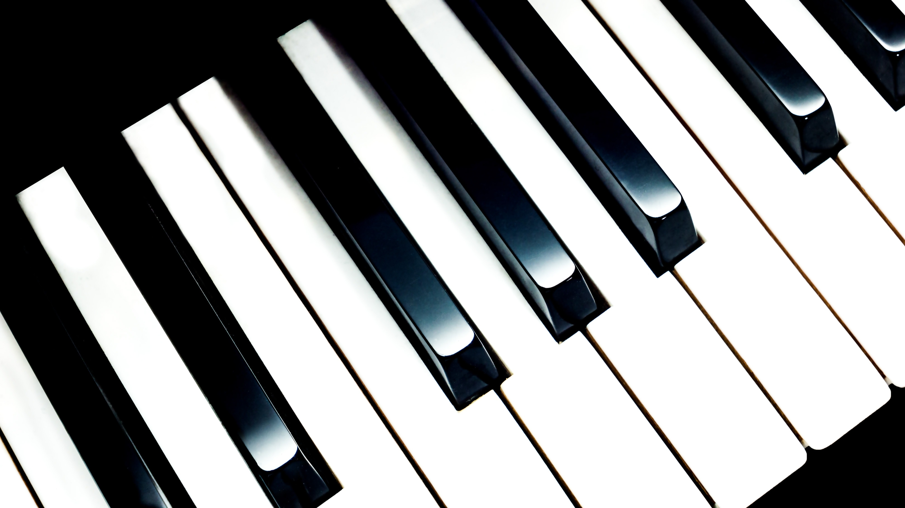
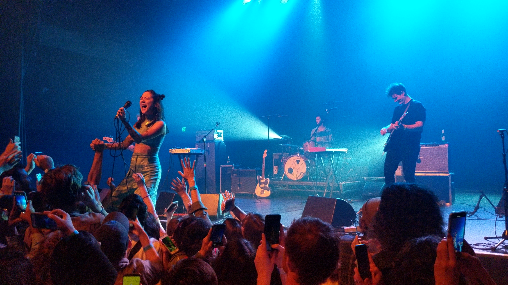

Blog

Seconds to Launch
Hello fans,
I’m glad that you have chosen to visit the website. As we are in our early days of crafting
and establishing where as musicians want to head towards. We both know that we want to spread
culture and history of music, but at the same time want to heads towards the future of music
also. We decided to not only work with our own music and collaborate with each other, but
hopefully with other artists out there too. We hope to provide some sort of mission statement
and idea for our group of fans that has been so loyal to us ever since you have listened to our
music. Read more...

Got a Second
Hello Geniuses,
As both members of the Homo-Geniuses, we decided to call our fans the Geniuses. We think it is
relatively funny and interesting thought. We have an upcoming concert in Boston! We are hoping that
you as a fan will show up. As we both come the Berklee College of Music and would like to show you
what we think music is. This concert we will tackle contemporary music such as indie and electronic
music. I believe that you’ll love what we have produce and will have a collab artist with as us she
is our friend in our college years also. You Geniuses are what drive us to push the boundaries of
music for us. We all come from humble beginnings and let’s begin our adventure!
Read more...

Sic Parvis Magna
Geniuses,
Thank you for the turn out. We as Homo-Geniuses thank you for such a beautiful turn out. We were not expecting such a crowd! We want to introduce ourselves even more.
We met up in Berklee College in our undergrad years. Adam, younger one, a prodigy in the symphony arts, is dedicated to blend and mix music from different cultures ranging on
the early era of music to modern day symphony music. Sam, older one, who is dedicated in the arts of creating electronic and lyric for his music. We became friends pretty quick when we
forgot to choose our roommates when we signed up for dorm and got paired up. Overall, we loved all kinds of music and wanted to try to blend both of our arts together to allow. Adam
now teaches at Boston University under their music program and I, Sam, decided to continue education and explore animation for fun at MassArt.
Our guest artist/friend was Michelle. She also went to Berklee with us. We met with her in class and got to know her more when we saw each other at a concert. We are glad that you
gave her a warm welcome yesterday. It means a lot that you welcomed her. She is trying to pursue some sort of career in singing, you could find her on social media.
We want to let you Geniuses know that you are what drives us to continue to create our new music and not to be burned out from working hard.
Read more...